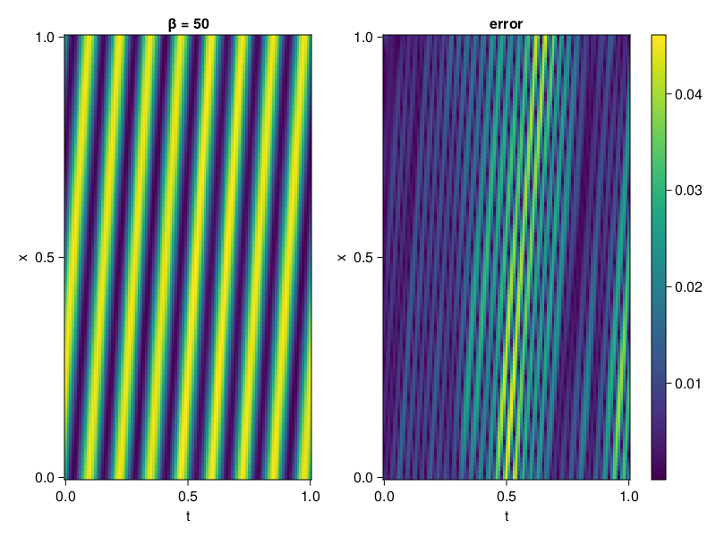

1D Convection Equation
Consider the following 1D-convection equation
\[\begin{aligned} &\frac{\partial u}{\partial t}+c \frac{\partial u}{\partial x}=0, x \in[0,1], t \in[0,1] \\ &u(x, 0)=sin(2\pi x) \\ &u(0,t) = -sin(2\pi ct)\\ &u(1,t) = -sin(2\pi ct) \end{aligned}\]
where $c = 50/2\pi$. First we solve it with QuasiRandomTraining.
using NeuralPDE, Lux, Random, Sophon, IntervalSets, CairoMakie
using Optimization, OptimizationOptimJL, OptimizationOptimisers
using CUDA
CUDA.allowscalar(false)
@parameters x, t
@variables u(..)
Dₜ = Differential(t)
Dₓ = Differential(x)
β = 50
c = β/2π
eq = Dₜ(u(x,t)) + c * Dₓ(u(x,t)) ~ 0
u_analytic(x,t) = sin(2π*(x-c*t))
domains = [x ∈ 0..1, t ∈ 0..1]
bcs = [u(0,t) ~ u_analytic(0,t),
u(1,t) ~ u_analytic(1,t),
u(x,0) ~ u_analytic(x,0)]
@named convection = PDESystem(eq, bcs, domains, [x,t], [u(x,t)])
chain = Siren(2, 1; num_layers = 5, hidden_dims = 50, omega = 1f0)
ps = Lux.initialparameters(Random.default_rng(), chain) |> GPUComponentArray64
discretization = PhysicsInformedNN(chain, QuasiRandomTraining(100); init_params=ps, adaptive_loss = NonAdaptiveLoss(; bc_loss_weights = [100,100,100]))
prob = discretize(convection, discretization)
@time res = Optimization.solve(prob, Adam(); maxiters = 3000)u: ComponentVector{Float64}(layer_1 = (weight = [0.278376819234666 0.31551100092914625; 0.11331072788619437 0.27387647780868835; … ; -0.15990211184418285 0.252039143774568; 0.43727011839069396 0.05331766026807272], bias = [-0.04028786605836113; -0.012349497608123068; … ; -0.007843737840631904; 0.061963441216982676;;]), layer_2 = (weight = [-0.1947527336508904 -0.26524741950032865 … -0.08575337511859066 0.19437083923718124; 0.20156104153499257 0.2811627465830148 … -0.224583324941425 0.2728959967146918; … ; -0.2670659028097071 -0.31563141860791777 … 0.36046675761552777 -0.06682824064932591; -0.04380258745411044 -0.21619452277880746 … -0.024919388433170007 0.2733457554481913], bias = [-0.027746344015702206; 0.020236682147203085; … ; -0.03477214904321253; 0.11377494015246677;;]), layer_3 = (weight = [-0.18089125099365522 0.0670213652208578 … 0.2872908817552691 0.24473625539915922; 0.1404294630816385 -0.2817035885240351 … -0.14046052854068622 -0.18011674949882958; … ; -0.012845481526501628 -0.1623608197269773 … 0.04743936185847071 -0.29170734727324166; -0.281339723094326 -0.36312781000139877 … -0.029261770821985868 0.3174201259828998], bias = [0.029710813724482393; -0.07406618871424062; … ; -0.031068328418686206; -0.012378615667176985;;]), layer_4 = (weight = [0.33764780509338554 -0.03342703444556389 … -0.14691913095712766 0.014866490475638372; -0.07744908213783791 0.33504573451396646 … 0.06544131307392788 -0.0770758010261709; … ; -0.06505820636824505 0.20649041979619057 … -0.22681514322880042 -0.20492944677632796; -0.047922946148536004 0.020844006651496504 … 0.31170869228216536 0.2373072815110439], bias = [0.009098173366468948; -0.01690974585100353; … ; -0.00287648824637816; -0.03316246762644309;;]), layer_5 = (weight = [-0.21439305807840078 -0.28300911660695577 … 0.2010879472806285 -0.012226593065238565; 0.022823446330269666 0.042356251768328225 … -0.4473983526806104 0.0011990700906393938; … ; 0.06006148367430894 -0.24659390949831383 … 0.44240131284972645 -0.24174289383221576; -0.027732253541088502 -0.1979882844458834 … -0.36514387147395794 -0.08410971487983986], bias = [0.0004889925473250818; -0.08503185687198152; … ; 0.0230290262198603; -0.03084216752289394;;]), layer_6 = (weight = [0.12234605773758962 0.18835865427155032 … -0.5120302432477151 -0.06443023069906724], bias = [-0.00447565396486506;;]))Let's visualize the result.
phi = discretization.phi
xs, ts= [infimum(d.domain):0.01:supremum(d.domain) for d in domains]
u_pred = [sum(phi(gpu([x,t]),res.u)) for x in xs, t in ts]
u_real = u_analytic.(xs,ts')
axis = (xlabel="t", ylabel="x", title="β = $β")
fig, ax, hm = CairoMakie.heatmap(ts, xs, u_pred', axis=axis)
ax2, hm2 = heatmap(fig[1,end+1], ts,xs, abs.(u_pred' .- u_real'), axis = (xlabel="t", ylabel="x", title="error"))
Colorbar(fig[:, end+1], hm2)
Compared to Method of Lines
using MethodOfLines
dx = 0.001
order = 4
mol_discretization = MOLFiniteDifference([x => dx], t, approx_order = order)
# Convert the PDE problem into an ODE problem
prob = discretize(convection,mol_discretization)
# Solve ODE problem
using OrdinaryDiffEq
sol = solve(prob, Tsit5(), saveat=0.001)
grid = get_discrete(convection, mol_discretization)
discrete_x = grid[x]
discrete_t = sol[t]
solu = [map(d -> sol[d][i], grid[u(x, t)]) for i in 1:length(sol[t])]
u_pred = hcat(solu...)
fig_, ax, hm = CairoMakie.heatmap(ts, xs, u_pred', axis=axis)
ax2, hm2 = heatmap(fig_[1,end+1], ts,xs, abs.(u_pred' .- u_analytic.(discrete_x, discrete_t')'), axis = (xlabel="t", ylabel="x", title="error"))
Colorbar(fig_[:, end+1], hm2)